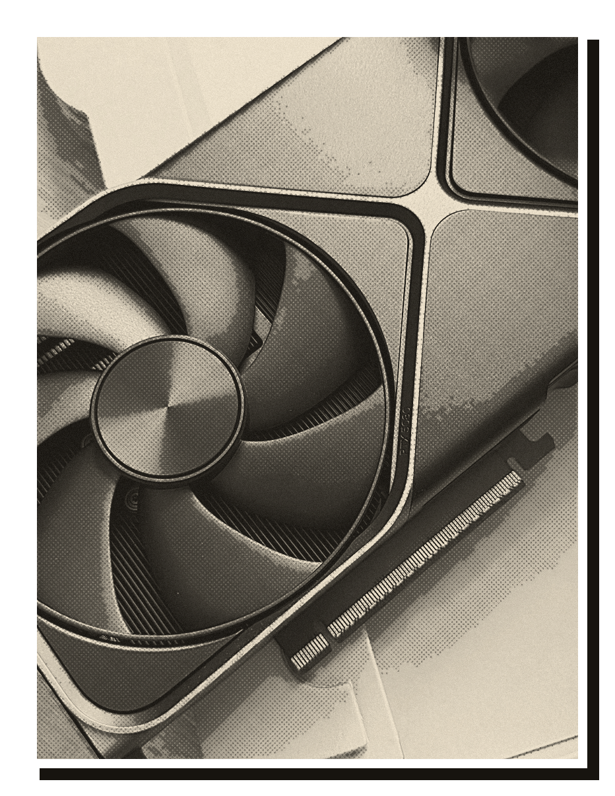
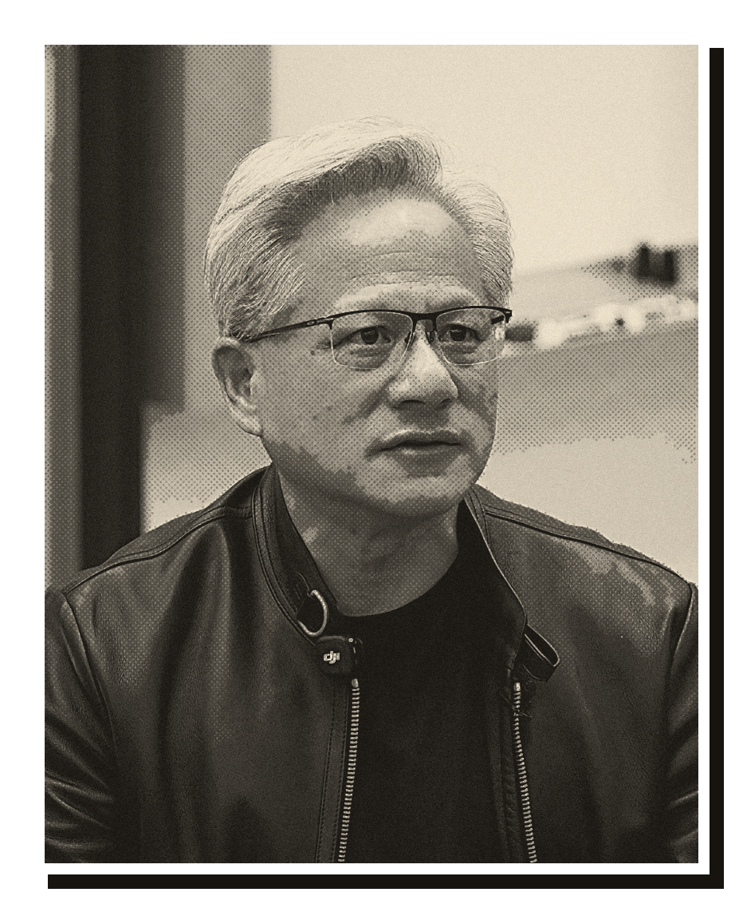
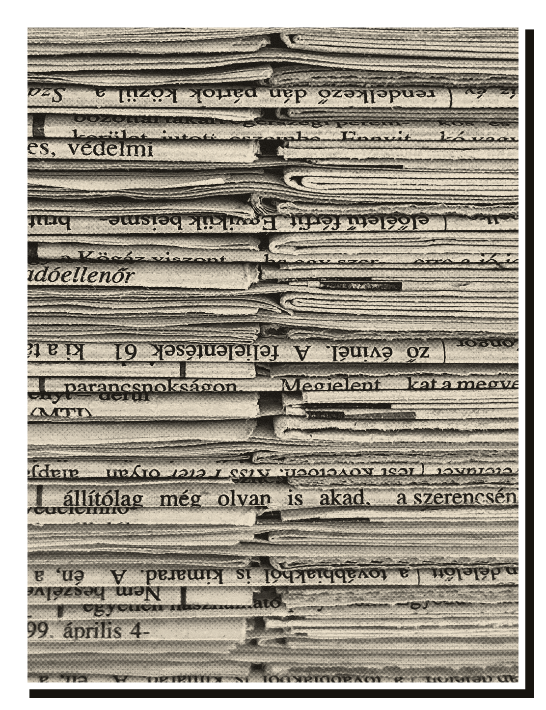
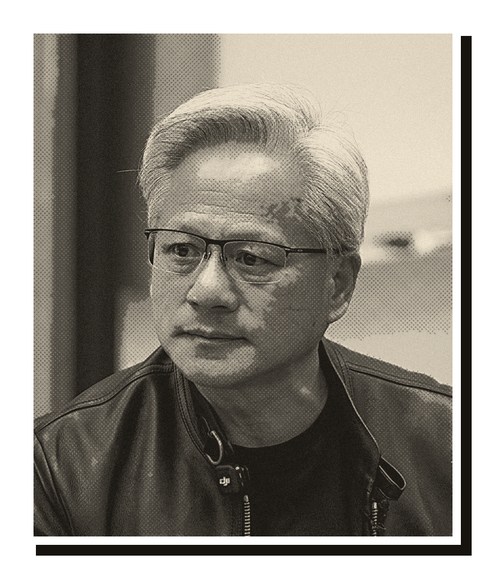
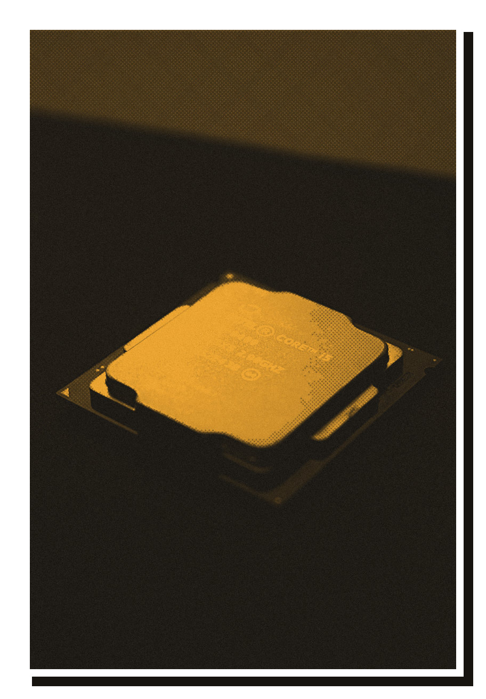

NVIDIA

Nvidia Corp.
Fundada · abril 1993
Santa Clara, CA
33 años
12·11

Nvidia · comunicado
Foto: A. Eidesvik
CC BY 4.0
FUENTE · Nvidia — 12/11/2026
Acción NVDA · 5 ruedas
NVDA ▼ −11% · NVDA ▼ −11% · NVDA ▼ −11% · NVDA ▼ −11% · NVDA ▼ −11% · NVDA ▼ −11% · NVDA ▼ −11% · NVDA ▼ −11%
FUENTE · TechCrunch — 13/11/2026

SIN CONFIRMAR
Contexto
Acusación
no probada
FUENTE · The New York Times — 29/10/2026
NOTA

“Le fui infiel a mi esposa. No hay excusa para lo que hice.”
Jensen Huang · nota a empleados
08/11/2026 · traducción · foto: A. Eidesvik, CC BY 4.0
DIJO
CHIPS

Por qué importa
GPU · IA
Centros de datos
JUSTICIA
“No sé si eso sea cierto.”
Todd Blanche · fiscal general de EE.UU.
sobre la acusación de espionaje · traducción
CONFIRMADO
FUENTE · Fiscal general T. Blanche — 12/11/2026
CONGRESO
Qué viene
Cámara de Representantes
Antes de Acción de Gracias
FUENTE · Rep. Brian Mast — 12/11/2026
TRAMA
FUENTES EN LA DESCRIPCIÓN